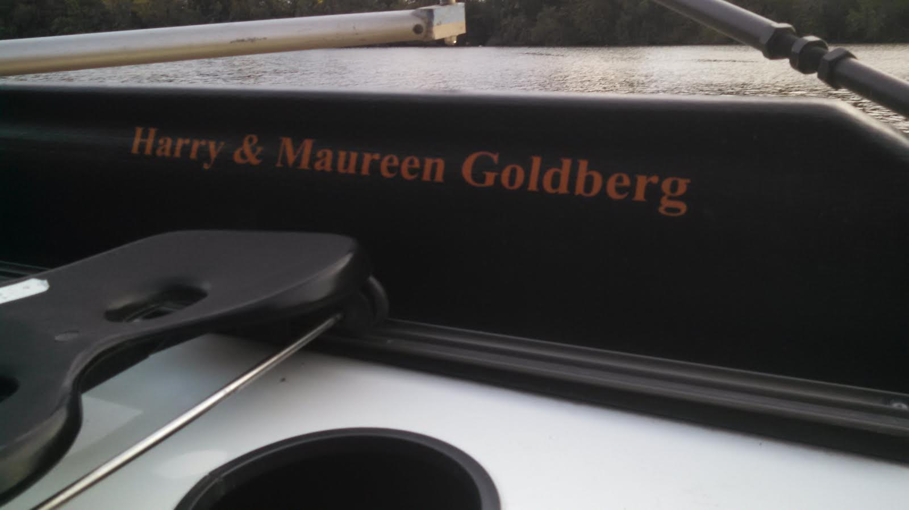
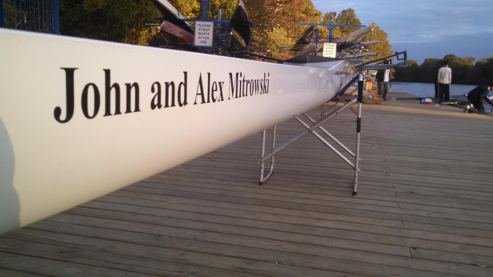

Donate
Let us row your name across the finish line
Row Across Texas
Join us for Texas Crew's largest fundraising event: Row Across Texas!
As a team, we will row 801 miles through November 10th-12th, putting in the hardwork, time and dedication that it takes to accomplish such a large endeavor. Our goal is to raise $25,000 in order to keep this program, with its long standing tradition of representing the University of Texas, successful. Contributions and support from our sponsors is vital and goes to maintaining our program's equipment, recruitment, and ability to travel and compete at the national level.
Please feel free to sponsor one of our athletes, or you can simply make a general donation to the entire team for our mission(See below for details). We greatly appreciate your support!
Please look below for the donation link
We also have some great donor Thank You Gifts!
| $25 | Receive a social media shout out and thank you via Facebook and Twitter! |
|---|---|
| $50 | Receive a handwritten thank you card from novice and varsity captains. |
| $100 | Receive a team picture signed by the team captains and coaches. |
| $500 | Recognition on the Texas Crew website www.texas-crew.github.io, in addition to the above tiers. |
| $1,000 | Your name will be placed on the seat of one of our boats, in addition to the above tiers. | 
| $1,500 | Your name will be placed on an oar, in addition to the above tiers. |
| $3,000 | You and the names you wish to honor will be placed on a set of oars (8), in addition to the above tiers. You and the names you wish to honor will be placed on a set of oars (8) |
| $7,500 | Your name or the name you wish to honor will be placed on one of our 2 person boats, in addition to the above tiers. |
| $10,000 | Your name or the name you wish to honor will be placed on a 4 person boat, in addition to the above tiers (excluding the naming of the 2 person boat and oars). | 
| $15,000 | Your name or the name you wish to honor will be placed on an 8 person boat, in addition to the above tiers (excluding the naming of the 4 and 2 person boat). |
Following rowing custom, the tradition of Blade Retirement goes back to the start of the sport. Once an oar is no longer used due to new equipment purchases, the sponsor can claim the retired oar. This is a way for us to show our gratitude and follow the honor of our sport.
Donate Online
Click on this link, and then click GIVE NOW to make a donation and fill it out completely. Stay tuned with our updates and social media!
Please note that this information is only used when donating online. Any paper checks should be made out to Texas Crew at:
Texas Crew
University of Texas at Austin
Division of Recreational Sports
2101 Speedway Stop D7500
Austin, Texas 78712
Thank you for your donation!
Current Donors
Texas Crew relies heavily on financial and material support from our supporters. They are friends and family of rowers, members of the Austin community, or former Texas Crew rowers themselves.
We would like to thank each of the persons listed below for contributing to Texas Crew and allowing us to row.
- Bill Bryan, MD
- Bruce and Nancy Wood
- Clifford C. Voice
- Gerardo Enrique Carcamo
- Jack and Pat Mahand
- James and Nancy Rottman
- Josh and Lisa Oren
- Ken and Carolyn Yeats
- Leigh Reddinger
- Paul Woodruff
- Teresa De La Garza
- Russ and Nancy Conser
- Bena Cates
- Angela Heidt
- Robert Toto
- Virginia Peacock
- Ningxin Zeng
- Richard Linklater
- Angela Bishop
- Aixia Wang
- TCPN Management Group